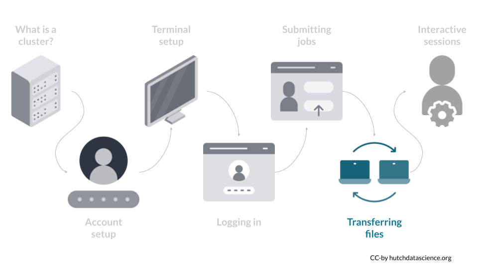
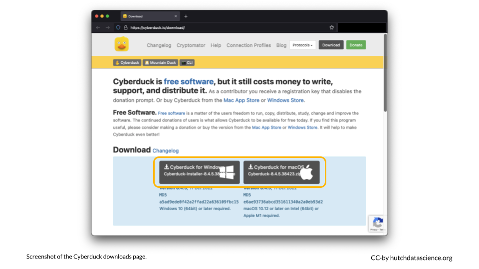
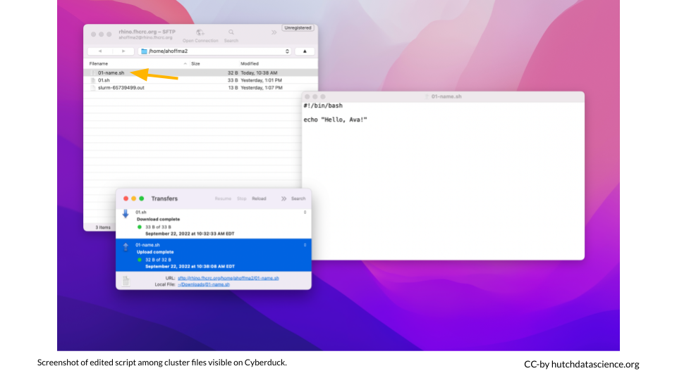

Chapter 6 File Upload and Download

Exchanging files with the cluster is very important. You can imagine scenarios where:
- You want to download log files or output files
- You want to upload a custom
.shscript file that you wrote on your laptop - You want to upload other files
In this course, upload and download of files is performed using Cyberduck. Cyberduck is a tool that lets us connect to the cluster securely, browse files, and transfer files securely.
If you are working with sensitive data (such as data with PHI that requires HIPAA compliance, you need to be extra cautious about transferring your data to the cluster. Your home directory is not an appropriate storage option for such data. Make sure you consider any stipulations in your data use agreements.
6.1 Download Cyberduck
Download the latest version of Cyberduck here.

Note that the version of Cyberduck in the Software Center or Self Service might not be current, causing compatibility issues with some operating systems.
6.2 Create Connection
Launch Cyberduck and click on “Open Connection”.
- From the dropdown menu, select “SFTP (SSH File Transfer Protocol)”
- For Server, type “rhino.fhcrc.org”
- Fill in your HutchNetID for Username and fill in your password
Click “Connect”

Click “Allow”. You can also check the box to indicate “Always”.

You should see your script file “01.sh” and the log file.

6.3 Download and Edit the Script
- Right click on “
01.sh” and select “Download” - You will see a “Transfers” prompt open, and the
01.shfile should now appear in your Downloads folder - Open the
01.shin your Downloads folder

Edit the message to include your name and save the file. Rename the file 01-name.sh.

6.4 Upload the New Script
From your Downloads folder, simply drag the file to Cyberduck.

You should now see the new script among your cluster files.

6.5 Run the New Script
Return to your Terminal. Submit a job with your new script by running the following. When you type ls you should see a new log file!
sbatch 01-name.sh
The job numbers included in log file names generally increase in number. The greater the number, the more recently the job was run.
Use the cat command to inspect the log. Make sure you replace [your-number-here] to match your file. The message should show the new text that you added!
cat slurm-[your-number-here].out